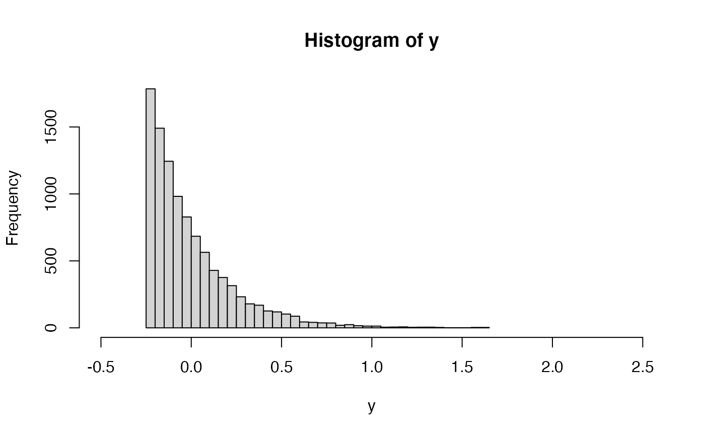

dummyinstance.RdThis is a dummy instance routine to test the sampling procedures, in
combination with dummyalgo().
dummyinstance() receives a parameter distr containing the name of a
random number generation function (e.g. rnorm, runif, rexp etc.), plus
a variable number of arguments to be passed down to the function in distr.
dummyinstance(distr, ..., bias = 0)
| distr | name of a function that generates random values according to a given distribution, e.g., "rnorm", "runif", "rexp" etc. |
|---|---|
| ... | additional parameters to be passed down to the function in
|
| bias | a bias term to add to the results of the distribution function (e.g., to set the mean to zero). |
a single numeric value sampled from the desired distribution.
dummyinstance(distr = "rnorm", mean = 10, sd = 1)#> [1] 8.709324# Make a centered (zero-mean) exponential distribution: lambda = 4 # 10000 observations set.seed(1234) y <- numeric(10000) for (i in 1:10000) y[i] <- dummyinstance(distr = "rexp", rate = lambda, bias = -1/lambda) mean(y)#> [1] -0.002876634